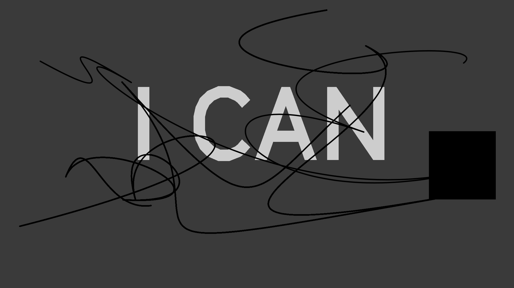
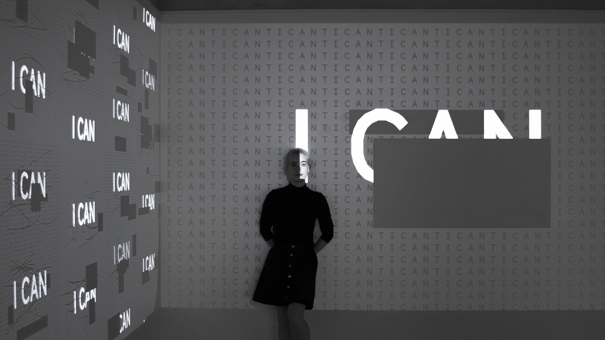
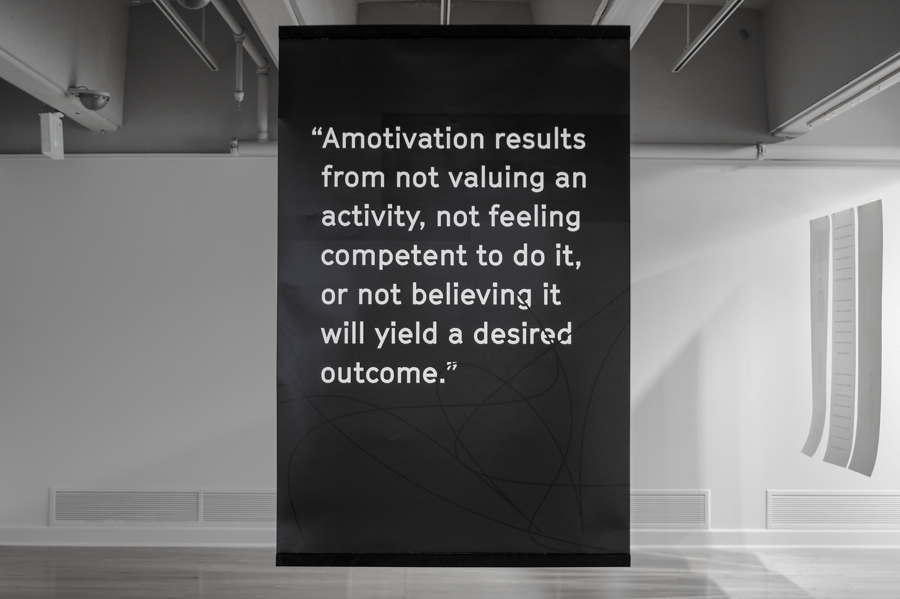
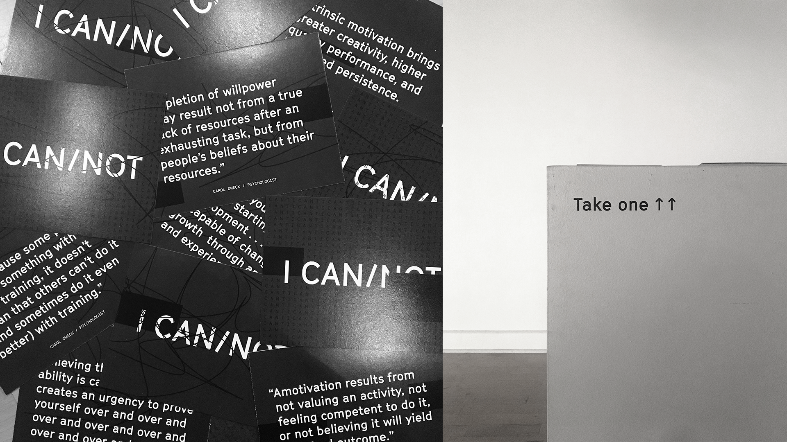
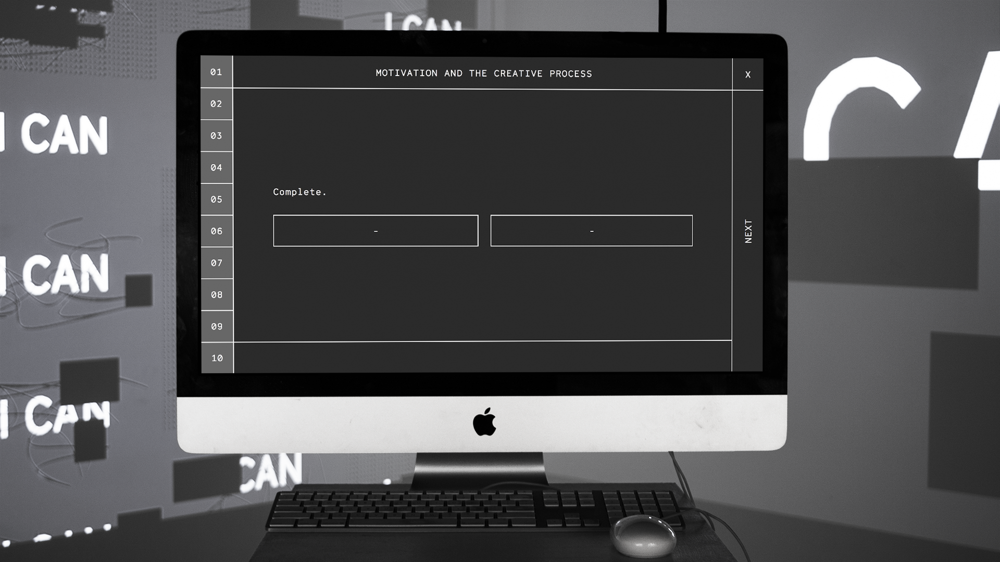
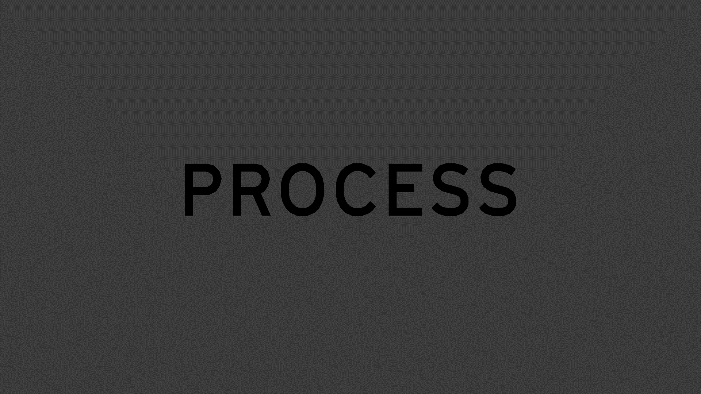

My senior capstone project is an exploration of choices we make in times of low creative confidence and how these help or hinder motivation. Psychological studies I researched indicate that we have a substantial amount of control over our motivation and our willpower. To visualize this cause and effect relationship, I chose to build an environment where a user's response to a questionnaire would immediately effect his/her surroundings.
The resulting installation incorporates a desktop computer and two wall projections—the desktop houses the questionnaire, one projector shows the user's unique response, and the other cycles through past responses. The questions are reflective of my research. There are no definitively right and wrong answers, but each answer leads to either an increase or a decrease in motivational levels. The image projected on the wall is altered in accordance with these answers, representative of an individual's level of motivation.
I built the questionnaire with HTML/CSS, the wall projection in p5.js, and sent data between the two pages with JavaScript.
Web interface of questionnaire.
User-generated images.
My personal result.
   